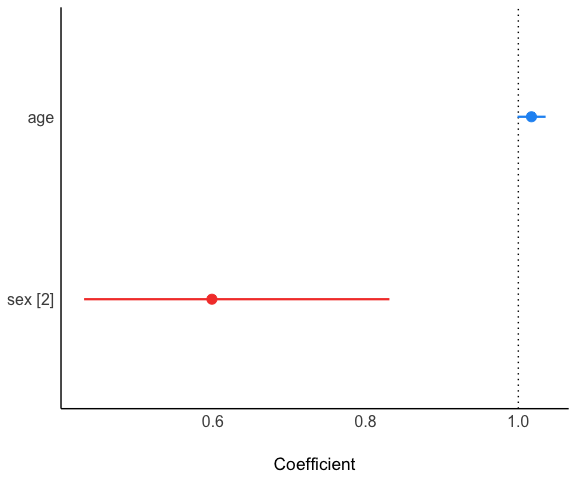

The goal of regverse is to provides R6 classes, methods and utilities to construct, analyze, summarize, and visualize regression models (CoxPH and GLMs).
Installation
You can install the development version of regverse like so:
remotes::install_github("WangLabCSU/regverse")Simple case
This is a basic example which shows you how to build and visualize a Cox model.
Prepare data:
Create a model:
model <- REGModel$new(
lung,
recipe = list(
x = c("age", "sex"),
y = c("time", "status")
)
)
model
#> <REGModel> ==========
#>
#> Parameter | Coefficient | SE | 95% CI | z | p
#> -----------------------------------------------------------------
#> age | 1.02 | 9.38e-03 | [1.00, 1.04] | 1.85 | 0.065
#> sex [2] | 0.60 | 0.10 | [0.43, 0.83] | -3.06 | 0.002
#>
#> Uncertainty intervals (equal-tailed) and p-values (two-tailed) computed
#> using a Wald z-distribution approximation.
#> [coxph] model ==========You can also create it with formula:
model <- REGModel$new(
lung,
recipe = Surv(time, status) ~ age + sex
)
model
#> <REGModel> ==========
#>
#> Parameter | Coefficient | SE | 95% CI | z | p
#> -----------------------------------------------------------------
#> age | 1.02 | 9.38e-03 | [1.00, 1.04] | 1.85 | 0.065
#> sex [2] | 0.60 | 0.10 | [0.43, 0.83] | -3.06 | 0.002
#>
#> Uncertainty intervals (equal-tailed) and p-values (two-tailed) computed
#> using a Wald z-distribution approximation.
#> [coxph] model ==========Take a look at the model result (package see is required):
model$plot()
Visualize with more nice forest plot.
model$get_forest_data()
model$plot_forest()Batch processing models
For building a list of regression model, unlike above, a lazy building approach is used, i.e., $build() must manually typed after creating REGModelList object. (This also means you can check or modify the setting before building if necessary)
ml <- REGModelList$new(
data = mtcars,
y = "mpg",
x = c("factor(cyl)", colnames(mtcars)[3:5]),
covars = c(colnames(mtcars)[8:9], "factor(gear)")
)
ml
#> <REGModelList> ==========
#>
#> X(s): factor(cyl), disp, hp, drat
#> Y(s): mpg
#> covars: vs, am, factor(gear)
#>
#> Not build yet, run $build() method
#> [] model ==========
ml$build(f = "gaussian")
str(ml$result)
#> Classes 'data.table' and 'data.frame': 25 obs. of 10 variables:
#> $ focal_term: chr "factor(cyl)" "factor(cyl)" "factor(cyl)" "factor(cyl)" ...
#> $ variable : chr "(Intercept)" "factor(cyl)6" "factor(cyl)8" "vs" ...
#> $ estimate : num 23.28 -5.34 -8.5 1.68 4.31 ...
#> $ SE : num 3.1 1.89 3.05 2.35 2.16 ...
#> $ CI : num 0.95 0.95 0.95 0.95 0.95 0.95 0.95 0.95 0.95 0.95 ...
#> $ CI_low : num 17.203 -9.04 -14.473 -2.931 0.084 ...
#> $ CI_high : num 29.37 -1.64 -2.53 6.3 8.54 ...
#> $ t : num 7.504 -2.829 -2.791 0.715 1.999 ...
#> $ df_error : int 25 25 25 25 25 25 25 26 26 26 ...
#> $ p : num 6.18e-14 4.67e-03 5.25e-03 4.75e-01 4.56e-02 ...
#> - attr(*, ".internal.selfref")=<externalptr>
str(ml$forest_data)
#> Classes 'data.table' and 'data.frame': 6 obs. of 17 variables:
#> $ focal_term: chr "factor(cyl)" "factor(cyl)" "factor(cyl)" "disp" ...
#> $ variable : chr "factor(cyl)" NA NA "disp" ...
#> $ term : chr "factor(cyl)4" "factor(cyl)6" "factor(cyl)8" "disp" ...
#> $ term_label: chr "factor(cyl)" "factor(cyl)" "factor(cyl)" "disp" ...
#> $ class : chr "factor" "factor" "factor" "numeric" ...
#> $ level : chr "4" "6" "8" NA ...
#> $ level_no : int 1 2 3 NA NA NA
#> $ n : int 11 7 14 32 32 32
#> $ estimate : num 0 -5.3404 -8.5026 -0.0282 -0.0515 ...
#> $ SE : num NA 1.88767 3.04626 0.00924 0.01201 ...
#> $ CI : num NA 0.95 0.95 0.95 0.95 0.95
#> $ CI_low : num NA -9.0402 -14.4732 -0.0463 -0.075 ...
#> $ CI_high : num NA -1.6407 -2.532 -0.0101 -0.0279 ...
#> $ t : num NA -2.83 -2.79 -3.05 -4.28 ...
#> $ df_error : int NA 25 25 26 26 26
#> $ p : num NA 4.67e-03 5.25e-03 2.27e-03 1.84e-05 ...
#> $ reference : logi TRUE FALSE FALSE FALSE FALSE FALSE
#> - attr(*, ".internal.selfref")=<externalptr>
ml$plot_forest(ref_line = 0, xlim = c(-15, 8))